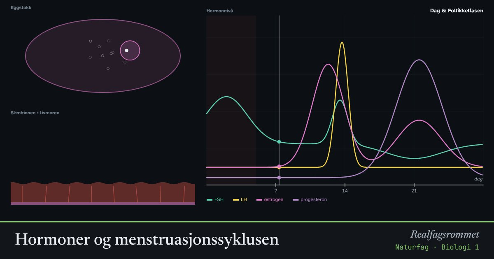

Hormoner og menstruasjonssyklusen
Hormoner fra hypofysen og eggstokkene styrer menstruasjonssyklusen. De bestemmer når et egg modnes og slippes, og når slimhinnen i livmoren bygges opp og støtes av. P-piller virker ved å endre dette samspillet.
Start animasjonen
Formler
Om animasjonen
FSH fra hypofysen får en follikkel i eggstokken til å vokse. Follikkelen lager østrogen, som bygger opp slimhinnen i livmoren.
Når østrogennivået er høyt, skiller hypofysen ut mye LH. LH-toppen utløser eggløsning rundt dag 14. Resten av follikkelen blir til gulelegemet, som lager progesteron. Progesteron holder slimhinnen klar for et befruktet egg.
Blir egget ikke befruktet, forsvinner gulelegemet, progesteronet faller, og slimhinnen støtes ut: menstruasjon. Ved graviditet lager fosteret hormonet hCG, som holder gulelegemet i live. Det er hCG en graviditetstest måler.
Kombinasjonspiller gir kunstig østrogen og gestagen hver dag. Det holder FSH og LH lave, så ingen egg modnes og ingen eggløsning skjer. Blødningen i pillepausen kalles en bortfallsblødning. Syklusens lengde varierer mye fra person til person.
Prøv dette
- Hvilket hormon utløser eggløsningen? Hvilken dag skjer den her?
- Hvorfor faller progesteronet mot slutten av syklusen hvis egget ikke blir befruktet?
- Hvorfor blir det ingen eggløsning når man tar p-piller?
- Hva måler en graviditetstest, og hvorfor kan den først vise utslag etter noen dager?
Kompetansemål
- Naturfag: Helse og livsstil, og hvor pålitelig informasjonen er
- Biologi 1: Homeostase, hormoner og livsstil
- Biologi 1: Kommunikasjon mellom celler: nerver og hormoner
Mer om kroppen: nerver, hormoner og immunforsvar
- Nerveimpulsen: aksjonspotensialet
- Blodsukker: insulin og glukagon
- Immunforsvaret og vaksiner
- Melkesyre: fra melk til yoghurt og i musklene